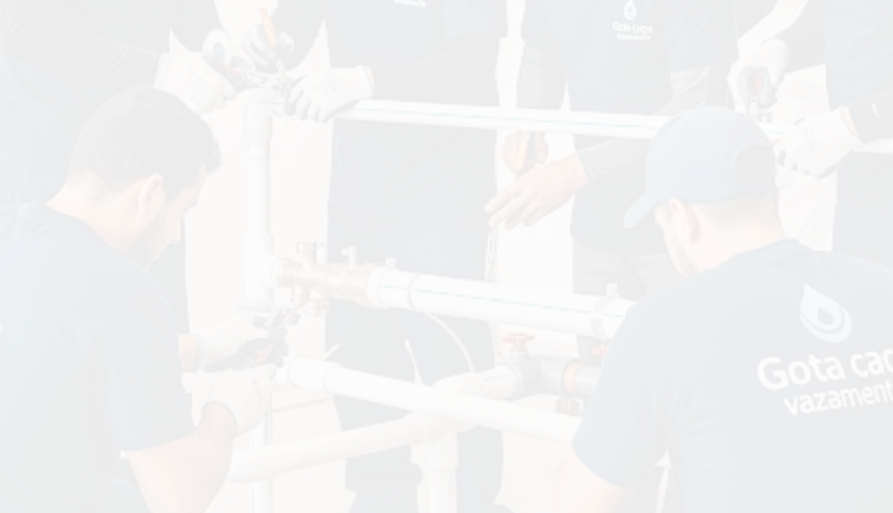
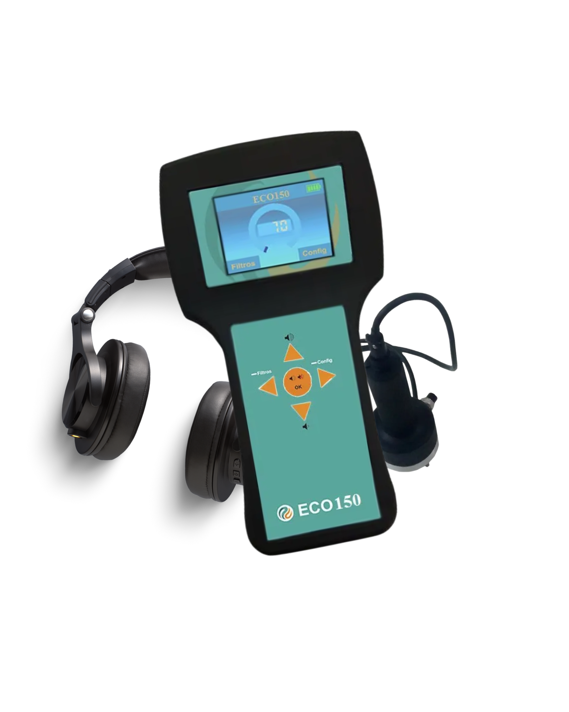
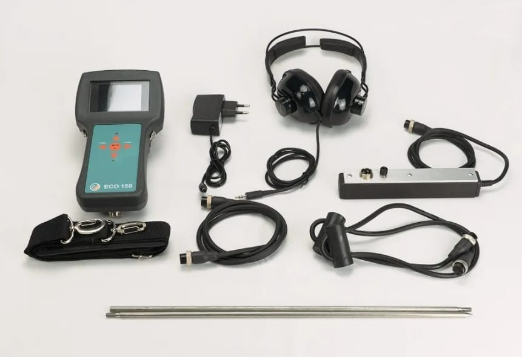
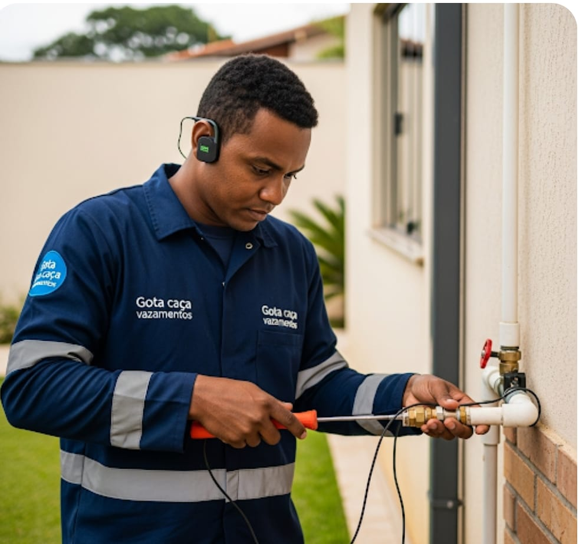
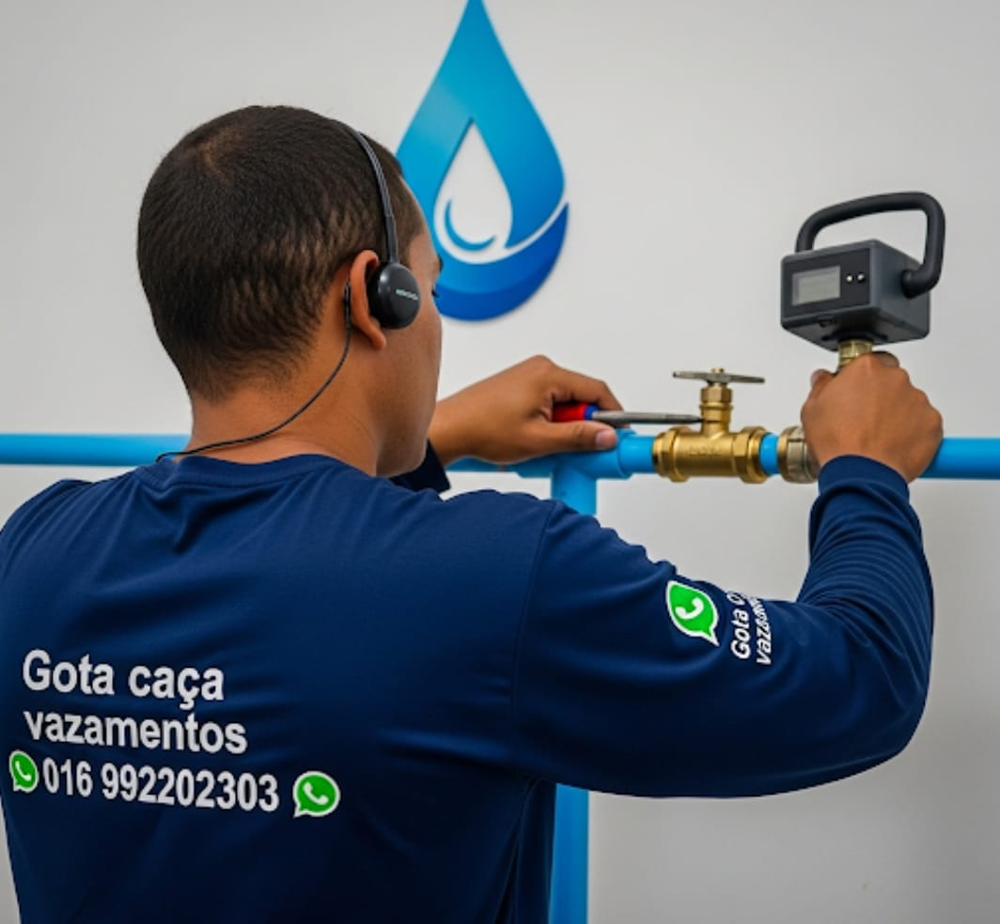
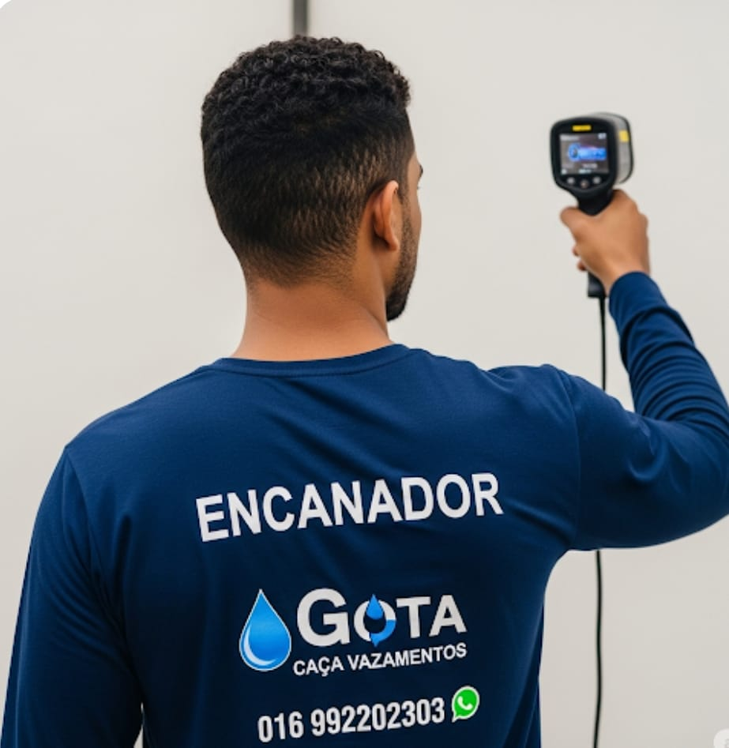

Desça para mais informações!


Desça para mais informações!


Para o melhor aproveitamento do site, é recomendado o uso do celular na vertical (em pé)
Desça para mais informações!
O geofone eletrônico é uma ferramenta essencial e altamente eficaz para a detecção de vazamentos de água, especialmente aqueles que estão ocultos em tubulações subterrâneas, paredes ou pisos. Ao contrário de métodos invasivos que exigem quebrar superfícies aleatoriamente, o geofone eletrônico oferece uma solução não destrutiva, economizando tempo, dinheiro e evitando danos à propriedade.


A principal vantagem do geofone eletrônico é sua alta precisão, que permite localizar o ponto exato do vazamento com rapidez. Isso elimina a necessidade de grandes e dispendiosas obras para encontrar e consertar o problema.
O uso do geofone eletrônico evita a destruição de pisos, paredes e jardins. O conserto é focado apenas no ponto específico onde o vazamento foi detectado, o que reduz os custos de reparo e os transtornos para o proprietário.
A tecnologia do geofone eletrônico permite detectar vazamentos mesmo em tubulações mais profundas, enterradas sob o solo ou concreto. Alguns modelos conseguem identificar problemas a vários metros de profundidade, dependendo da pressão da água.
Ao identificar e reparar vazamentos ocultos de forma rápida, o geofone ajuda a combater o desperdício de água, que pode levar a contas mais altas e ter um impacto ambiental negativo.
O geofone eletrônico é uma solução moderna e altamente vantajosa para o problema de vazamentos de água invisíveis. Seu uso resulta em reparos mais rápidos, mais econômicos e com menos danos, protegendo o patrimônio e ajudando a conservar um recurso natural tão valioso. Por isso, é a ferramenta padrão utilizada por profissionais especializados em caça vazamentos.
Na Gota Caça Vazamentos, identificamos e solucionamos qualquer tipo de vazamento com máxima precisão. Nossos especialistas utilizam equipamentos modernos que garantem diagnósticos rápidos, sem quebrar paredes ou pisos. Trabalhamos com detecção de vazamentos em encanamentos, reservatórios, piscinas, caixas d’água e muito mais. A nossa prioridade é oferecer um atendimento ágil, seguro e com o menor transtorno possível. Garantimos resultados eficazes e total transparência do início ao fim.
(Com aparelhos eletrônicos)

A Gota Caça Vazamentos utiliza tecnologia avançada para detectar vazamentos sem quebra. Atuamos com precisão em tubulações, encanamentos, caixas d’água e redes hidráulicas. Com métodos não destrutivos, identificamos o ponto exato do vazamento, economizando tempo, água e dinheiro. Nossa equipe especializada garante um serviço ágil, limpo e seguro para sua residência ou empresa. Confiança e eficiência são nossos maiores compromissos.

Oferecemos serviços completos para identificar e solucionar vazamentos em residências, comércios e indústrias. Nossos principais serviços incluem: detecção de vazamentos, termografia, vídeo inspeção, teste de pressão, reparos hidráulicos e vistoria técnica. Trabalhamos com equipamentos modernos e equipe qualificada, garantindo resultados rápidos e sem danos estruturais. Conte com a Gota Caça Vazamentos para um serviço preciso e confiável.

A tecnologia de termografia é um dos métodos mais modernos da Gota Caça Vazamentos e Serviços. Utilizamos câmeras infravermelhas que detectam mudanças de temperatura nos materiais, identificando vazamentos ocultos em paredes, pisos ou estruturas internas. O exame térmico é não invasivo, seguro e extremamente preciso, evitando obras desnecessárias. Essa técnica agiliza o diagnóstico, reduz custos e oferece muito mais tranquilidade para sua residência ou empresa.
ARARAQUARA - SP
MATÃO - SP
AMÉRICO BRASILIENSE - SP
SÃO CARLOS - SP
Atendemos as cidades de Araraquara, Américo Brasiliense, Matão e São Carlos. Caso sua região não esteja acima ou foi citada, entre em contato para confirmarmos se há atendimento em sua região.
DOS CLIENTES
SATISFEITOS
CHEGAMOS EM ATÉ 50 MINUTOS
Entre em contato conosco da forma que preferir. Atendemos por telefone, WhatsApp e e-mail, com retorno rápido e atendimento personalizado. Nossa equipe está sempre pronta para esclarecer dúvidas e oferecer a melhor solução. Garantimos total sigilo, compromisso e qualidade em todos os serviços.
Você também pode nos chamar pelas redes sociais. Estamos no Instagram, Facebook e Google Meu Negócio. Envie sua mensagem, fotos ou vídeos do problema e faremos uma avaliação gratuita inicial. A Gota Caça Vazamentos valoriza sua comodidade e segurança em todos os canais.
Prefere atendimento presencial? Agende uma visita técnica sem compromisso. Nossos especialistas vão até você com equipamentos modernos para identificar o vazamento rapidamente. Transparência e confiança são as bases da Gota Caça Vazamentos e Serviços.